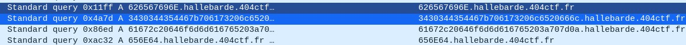

The challenge tells us to that a user was exfiltrating some confidential documents from his office computer to another server. He managed to exfiltrate the data, but fortunately, the system has monitored the network traffic and might have potentially captured the file that was used to exfiltrate the company data.
Checking the GET request traffic on Wireshark
http.request.method == “GET”
The result shows some suspicious file like "exfiltration.py". Let’s download the file to see what’s inside. You can also follow the TCP stream and check the response from the client.
On the HTTP response, we see some code that appear, you can get the first flag here, but I also want to show you how to download a file that has been downloaded by the user. Click on export HTTP object list Click on "save" to save the file. At the end of the script, we have the flag.
According to the python script, some data are sent through the protocol DNS. Therefore, we can filter on "dns" in Wireshark. The domain name is located on the following section :
Domain Name System (query) -> Queries -> Name
Select it and apply it as a column. Inside of the python script, we have the information of 626567696E.hallebarde.404ctf.fr and 656E64.hallebarde.404ctf.fr which in ascii indicate “begin” and “end”.
Let’s filter on “626567696E.hallebarde.404ctf.fr” to see if the user computer has made that DNS request.
In Wireshark, there are 4 requests of that type, which potentially means that there are 4 extracted files.
dns.qry.name contains "hallebarde.404ctf.fr"

Between those two requests, some dns requests contain encoded data in hex. Everyfile that has been extracted has an extension, such as the previous file "exfiltration.py". We might have "2e" which represent a "." in ascii. So let's export the result of dns.qry.name contains "2e". Since that we know, the response is normally the same as the request, we just want one of them to not have duplicate values.
(dns.qry.name contains "2e") && (dns.flags == 0x0100)
Export the value in a CSV file.
.
The filter came out with a lot of results, we were supposed to only have 4 files that have been extracted. We've forgotten to take into account the position of the period. Regular expression : ^[^.]+ => Match everything from the start until the first occurrence of “.”
With this regular expression, we remove the domain name "hallebarde.404ctf.fr". To do some hex analysis, I have written the following python script that take account the position of the "." in the file.
import re
import codecs
with open("dnsquery.txt", encoding='utf-8') as f:
name = []
for i in f:
name.append(re.search("^[^.]*", i).group()) # only keep the hostname
print(name)
namehex = []
tmplist = []
for i in name:
for j in range(0, len(i), 2):
tmplist.append(i[j:j+2])
namehex.append(tmplist)
tmplist = []
file = []
for cpt in range(len(namehex)):
if namehex[cpt][-4] == '2e' or namehex[cpt][-3] == '2e': # take account position
file.append(namehex[cpt])
j = 0
for k in files:
files[j] = ''.join(k) # Remove space
j = j+1
print(files)
Result : 666c61672e747874, 68616c6c6562617264652e706e67, 73757065722d7365637265742e706466, 657866696c74726174696f6e2e7079... import codecs
with open("dnsquery.txt", encoding='utf-8') as f:
name = []
for i in f:
name.append(re.search("^[^.]*", i).group()) # only keep the hostname
print(name)
namehex = []
tmplist = []
for i in name:
for j in range(0, len(i), 2):
tmplist.append(i[j:j+2])
namehex.append(tmplist)
tmplist = []
file = []
for cpt in range(len(namehex)):
if namehex[cpt][-4] == '2e' or namehex[cpt][-3] == '2e': # take account position
file.append(namehex[cpt])
j = 0
for k in files:
files[j] = ''.join(k) # Remove space
j = j+1
print(files)
The last thing to do is to convert those hexadecimal values in hex.
for i in files:
print(str(codecs.decode(i, "hex")))
File found : exfiltration.py,flag.txt,hallebarde.png,super-secret.pdf print(str(codecs.decode(i, "hex")))
We are asked to find the content of the file "super-secret.pdf" but this one is not readable.
To get the content of those file, the script "exfiltration.py" gives us some hint about how those files have been extracted. The content of the file is between those dns requests where the values are 626567696E.hallebarede.404ctf.fr and 656E64.hallebarde.404ctf.fr.
Extracting the dns response, I've noticed that there are more responses than requests. On the left the request (293 lines), and on the right the responses with 2441 lines.
On the dns responses, search for "73757065722d7365637265742e706466" which correspond to "super-secret.pdf" in hexadecimal. Once you have it, copy all the hex until 656E64 which mean "end".
Paste the value on CyberChef and convert them to strings. From CyberChef, as expected from the file name, it is a pdf file, let's download it and see what we have. Awesome, nothing, let's see if we can find something there. After a long time analyzing the object inside of the pdf using pdfid.py and pdf-parser.py from Didier Stevens, nothing came out until I use binwalk and see "begincmap" and "endcmap".
 I've used this python script to analyze and read the content of the pdf:
I've used this python script to analyze and read the content of the pdf:
from pdfminer3.layout import LAParams, LTTextBox
from pdfminer3.pdfpage import PDFPage
from pdfminer3.pdfinterp import PDFResourceManager
from pdfminer3.pdfinterp import PDFPageInterpreter
from pdfminer3.converter import PDFPageAggregator
from pdfminer3.converter import TextConverter
import io
resource_manager = PDFResourceManager()
fake_file_handle = io.StringIO()
converter = TextConverter(resource_manager, fake_file_handle, laparams=LAParams())
page_interpreter = PDFPageInterpreter(resource_manager, converter)
with open('./super-secret.pdf', 'rb') as fh:
for page in PDFPage.get_pages(fh, caching=True, check_extractable=True):
page_interpreter.process_page(page)
text = fake_file_handle.getvalue()
# close open handles
converter.close()
fake_file_handle.close()
print(text)
from pdfminer3.pdfpage import PDFPage
from pdfminer3.pdfinterp import PDFResourceManager
from pdfminer3.pdfinterp import PDFPageInterpreter
from pdfminer3.converter import PDFPageAggregator
from pdfminer3.converter import TextConverter
import io
resource_manager = PDFResourceManager()
fake_file_handle = io.StringIO()
converter = TextConverter(resource_manager, fake_file_handle, laparams=LAParams())
page_interpreter = PDFPageInterpreter(resource_manager, converter)
with open('./super-secret.pdf', 'rb') as fh:
for page in PDFPage.get_pages(fh, caching=True, check_extractable=True):
page_interpreter.process_page(page)
text = fake_file_handle.getvalue()
# close open handles
converter.close()
fake_file_handle.close()
print(text)
 Inside of that pdf content, there are some number with cid, it reminds me of the cmap that we have seen previously, let's map the cid with the values in the cmap.
Taking all those values gives us 3430344354467B444E535F337866316C7472347431306E5F68616C6C6562617264657D. Converting this hexadecimal value in string, it gives us 404CTF{DNS_3xf1ltr4t10n_hallebarde}
Inside of that pdf content, there are some number with cid, it reminds me of the cmap that we have seen previously, let's map the cid with the values in the cmap.
Taking all those values gives us 3430344354467B444E535F337866316C7472347431306E5F68616C6C6562617264657D. Converting this hexadecimal value in string, it gives us 404CTF{DNS_3xf1ltr4t10n_hallebarde}